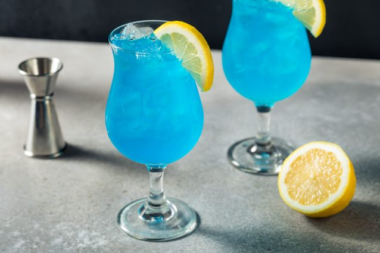

Blood Orange Mimosas

Description
Blood Orange Mimosa is a holiday brunch cocktail made with blood orange juice, Champagne and Orange liqueur. The gorgeous red color and fresh herb garnish makes this a festive addition to any holiday recipe collection.
Ingredients
- ½ cup pink sanding sugar, or as needed
- 1 (750 milliliter) bottle brut Champagne
- ½ cup pineapple juice
- ½ cup blood orange juice
- 2 fluid ounces orange liqueur (such as Grand Marnier®)
Steps
- Dip the rims of 4 champagne flutes in water. Dip into sanding sugar to coat the rims.
- Divide Champagne among the flutes. Pour 2 tablespoons pineapple juice and 2 tablespoons blood orange juice into each. Top mimosas with orange liqueur.
Strawberry Lemonade Vodka Slushies

Description
Summertime is better with Strawberry Lemonade Vodka Slushies! Frozen strawberries and freshly squeezed lemons, combined with vodka, a little bit of sugar and ice – make these drinks the hit of the party. Skip the vodka for virgin slushies!
Ingredients
- 3 cups fresh strawberries
- 2 cups lemonade
- 2 tablespoon sugar (optional)
- 1 cup vodka
- 3 cups ice
- strawberries and lemons for garnish
Steps
- Combine all ingredients into a blender. Blend until smooth. Serve immediately store any left overs in the freezer
AMF!

Description
This super fun spin on the long island iced tea is our most popular strong cocktail recipe! The AMF drink features four different liquors, lemon-lime soda, and blue curacao for that signature blue.
Ingredients
- 1 oz. (30ml) Vodka
- 1 oz. (30ml) Gin
- 2 oz. (60ml) Sweet & Sour Mix
- 1 oz. (30ml) Blue Curaçao
- 1 oz. (30ml) Rum
- 1 oz. (30ml) Tequila
- 1 oz. (30ml) Lemon Lime Soda
- Garnish: Lemon Slice, Cherry
Steps
- Fill a glass with ice and pour in vodka, rum, gin, tequila sweet & sour, lemon lime soda and blue curaçao. Stir to mix.
- Garnish with a lemon slice and a cherry.